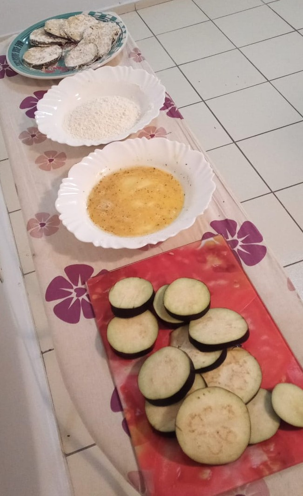
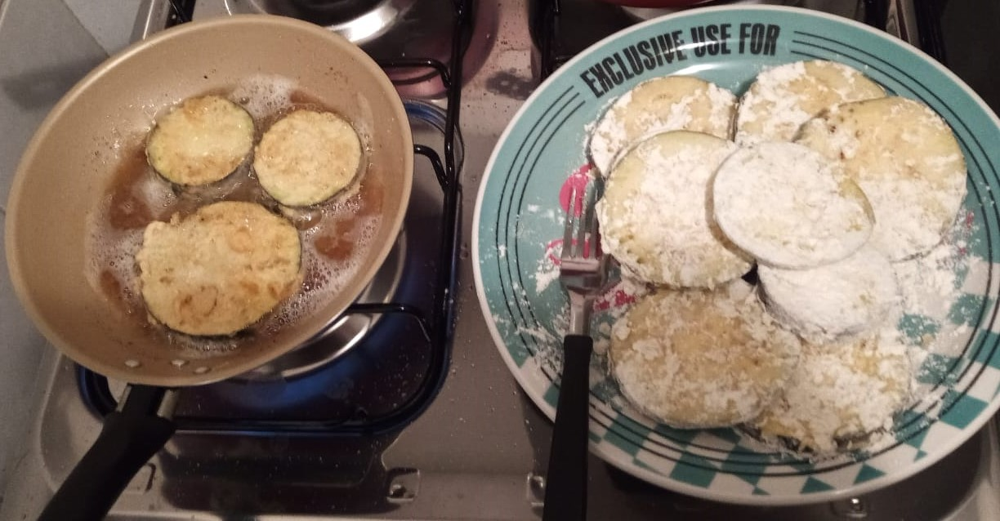

Berinjela a Milanesa
Salve meus amados seguidores deste humilde blog!!! Como vocês estão? Espero que estejam bem! Hoje, vou mostrar como se faz uma receita bem gostosa, que dá um pouco de trabalho, mas o resultado é surpreendente: com vocês, a berinjela a milanesa!!!

Ingredientes
- 1 berinjela
- 1 pacote de farinha de trigo (não irá ser usado o pacote inteiro)
- Sal a gosto
- 4 ovos
- Óleo
- OBS: Tenha em casa um rolo de papel toalha para secar a berinjela depois de frita hauhauhau
Preparação
- Lave a berinjela e corte-a em rodelas (de preferência um pouco grossas, para você não ter que empanar muitas )
- Em um prato fundo, coloque os ovos e uma pitada de sal. Mexa-os bem, para se tornar um líquido homogêneo. Em outro, coloque a farinha de trigo. Coloque pouca farinha e, conforme ela for acabando, você vai colocando mais.
- Agora vem a parte trabalhosa: Empanar a berinjela: Pegue uma rodela de beringela, mergulhe-a bem nos ovos mexidos; coloque-a por 5 segundos no ar para retirar o excesso dos ovos mexidos; Mergulhe-a na farinha de trigo (para empanar a rodela inteira); Finalize colocando a rodela empanada em outro prato. A imagem abaixo mostra o processo descrito:

-
Por fim, coloque óleo na frigideira e, quando estiver começando a dar umas borbulhadas,
coloque a berinjela e frite-a.
- OBS: Enquanto as berinjela vão sendo fritas, vai enrolando as berinjelas já fritas no papel toalha, para dar uma bela secada no óleo delas
